Cómo navegar el sitio, buscar y comprar repuestos (con cuenta o sin cuenta), seguir una compra, crear una cuenta de
comprador o de vendedor y cargar productos. Sitio: gnuino.com.ar/AUTONEX
Contenido
Cómo está armado el sitio
Elegir tu vehículo
Buscar repuestos
La ficha de un repuesto
El carrito
Comprar paso a paso
Comprar sin cuenta
Después de comprar: comprobante y seguimiento
Buscar tus compras
Crear una cuenta e ingresar
Panel del vendedor
Cómo carga productos un vendedor
Panel de administración
Otras páginas del sitio
Preguntas frecuentes
Para probar la demo
Es una demo. Los vehículos son datos reales del registro automotor (DNRPA); los repuestos,
las casas de repuestos, los precios y el stock son de demostración. Los pagos se hacen con tarjetas de prueba de Mercado Pago
y no cobran dinero real.
1Cómo está armado el sitio
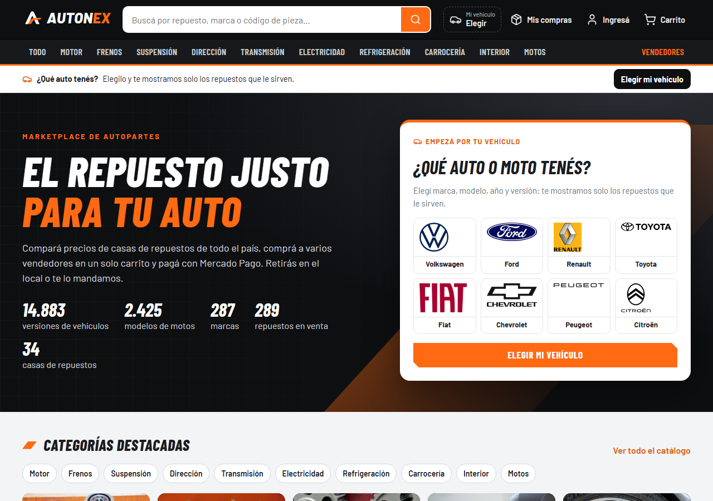
Página de inicio: encabezado, categorías, barra de vehículo y el selector "¿Qué auto o moto tenés?".
Arriba, en todas las páginas, está el encabezado:
Elemento
Para qué sirve
Logo AUTONEX
Vuelve al inicio.
Buscador
Busca por nombre de repuesto, marca o código de pieza (ver sección 3).
Mi vehículo
Elige o cambia tu auto o moto para ver solo los repuestos compatibles.
Mis compras
Sin sesión: lleva a "Seguí tu compra". Con sesión, está dentro del menú de tu cuenta.
Ingresá / tu nombre
Iniciar sesión o crear cuenta. Con sesión iniciada abre el menú de la cuenta.
Carrito
Muestra cuántos productos tenés y abre el carrito.
Debajo están las categorías (Motor, Frenos, Suspensión, Dirección, Transmisión, Electricidad, Refrigeración,
Carrocería, Interior, Motos) y el acceso a Vendedores. La barra "¿Qué auto tenés?" muestra el
vehículo elegido o invita a elegirlo. Al pie de la página hay enlaces a las categorías, a los vendedores, a las marcas de
repuestos para motos, a "Seguí tu compra" y a los créditos de las imágenes.
En el celular el sitio se adapta: el buscador pasa debajo del logo, los botones del encabezado quedan como íconos
y los filtros del catálogo se abren con el botón Filtros.
2Elegir tu vehículo
Elegir el vehículo es opcional, pero conviene: el catálogo pasa a mostrar solo los repuestos que le sirven
(más los universales, como el líquido de frenos) y cada ficha te dice si el repuesto es compatible.
Tocá Elegir mi vehículo (en la barra, en el encabezado o en la tarjeta del inicio).
Marca: elegí la marca. Arriba podés filtrar por tipo: Autos y SUV, Comerciales, Pesados o Motos, o escribir el nombre.
Modelo: elegí el modelo. En las motos se ven fotos y categorías (calle, enduro, scooter, etc.).
Año y Versión: elegí el año y la versión (motor, carrocería y años de fabricación).
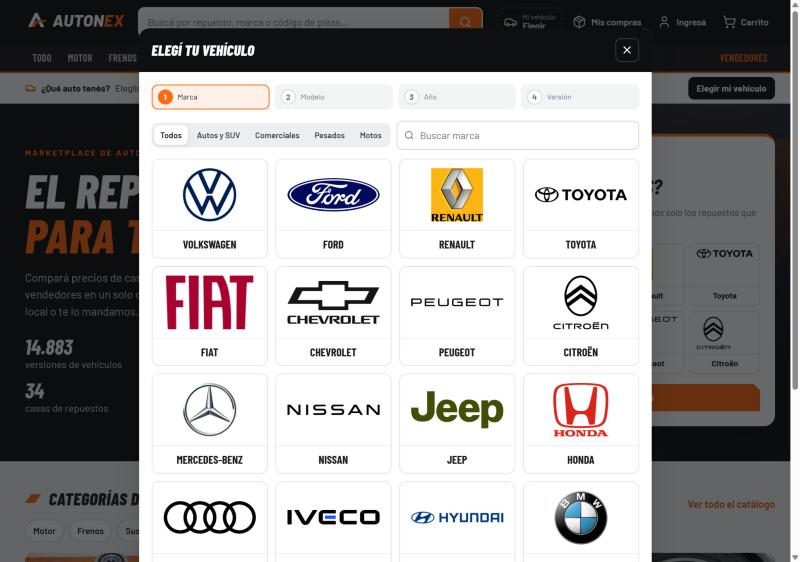
Paso 1: la marca.
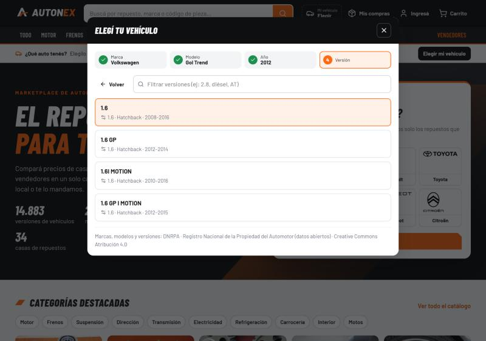
Paso 4: la versión (Volkswagen Gol Trend 2012).
Listo: la barra naranja confirma "Repuestos para tu Volkswagen Gol Trend 2012 · 1.6". Con Cambiar elegís
otro vehículo y con Quitar volvés a ver todo el catálogo. El vehículo queda guardado en el navegador para la
próxima visita.
3Buscar repuestos
Hay tres formas de llegar a un repuesto:
Buscador: escribí lo que necesitás. Entiende nombres (filtro de aceite), marcas, números de pieza,
códigos OEM y códigos de barras (EAN). Si escribís un vehículo en el texto, lo reconoce: pastillas hilux o
cadena KTM 300 EXC.
Categorías: tocá una categoría del encabezado (por ejemplo, Frenos) y después una subcategoría (Pastillas, Discos…).
Motos: la categoría Motos muestra sus subcategorías y las marcas que fabrican repuestos para motos.
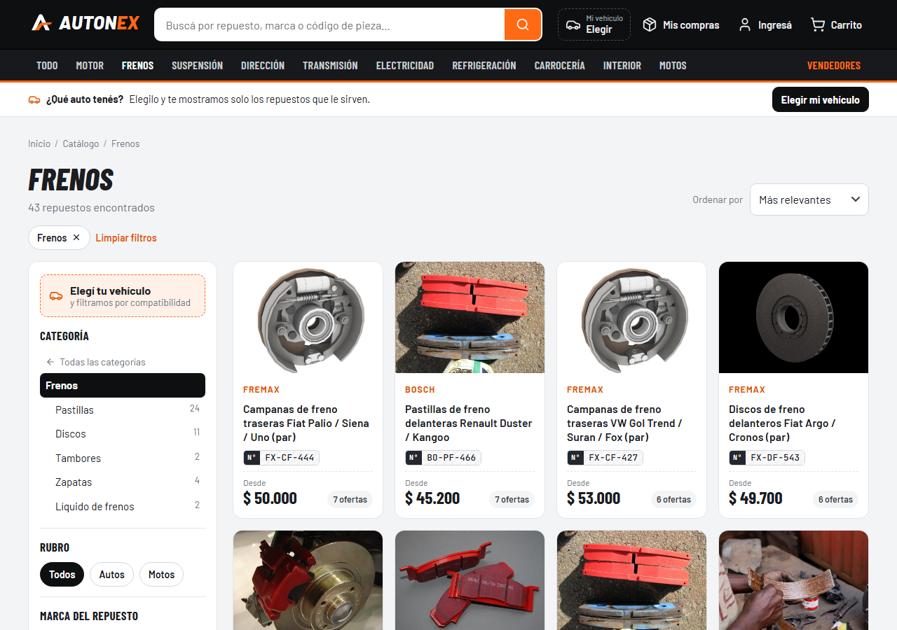
Catálogo de Frenos: filtros a la izquierda, resultados a la derecha y "Ordenar por" arriba.
Filtros (columna izquierda): Compatibilidad (si elegiste vehículo), Categoría, Rubro (autos o motos), Marca del
repuesto, Tipo de pieza, Condición (nuevo o usado), Provincia del vendedor, N° de parte / OEM / EAN, Stock y Precio.
Cada filtro activo aparece como una etiqueta arriba de los resultados: tocá la ✕ para quitarlo o
Limpiar filtros para quitar todos. Ordenar por: Más relevantes, Menor precio o Mayor precio.
Cada tarjeta muestra la marca, el nombre, el número de pieza, el precio "Desde" (la oferta más barata) y
cuántas ofertas tiene.
4La ficha de un repuesto
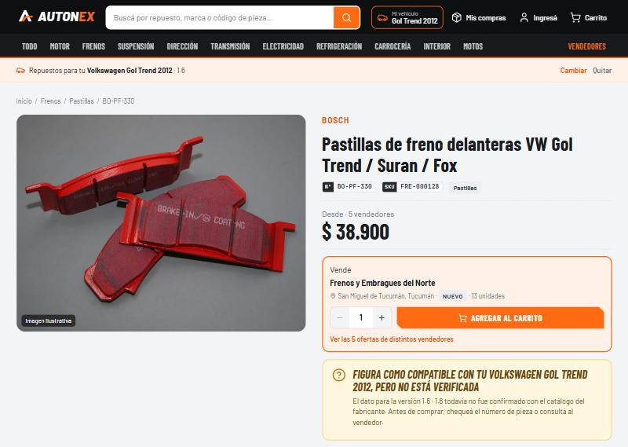
Ficha del repuesto con un vehículo elegido: precio desde, compra rápida y aviso de compatibilidad.
Datos del repuesto: marca, nombre, número de pieza (N°), SKU y categoría. Más abajo: descripción y ficha técnica.
Compra rápida: la mejor oferta, con el vendedor, su ciudad, la condición y el stock. Elegí la cantidad con
− y + y tocá Agregar al carrito.
Aviso de compatibilidad con tu vehículo:
verificada (confirmada con el catálogo del fabricante),
sin verificar (figura como compatible, pero conviene chequear el número de pieza) o
sin datos. Si no elegiste vehículo, te ofrece elegirlo.
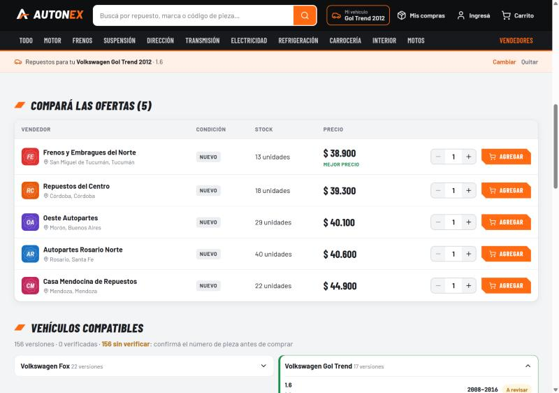
"Compará las ofertas": todas las casas que venden el repuesto, con condición, stock y precio. La más barata dice "Mejor precio".
En Compará las ofertas podés elegir a qué casa comprarle: cada fila tiene su cantidad y su botón
Agregar. Si la casa cargó fotos o una descripción propias, su fila tiene el enlace
"Ver las fotos y la descripción" (muy útil en los repuestos usados). Al final de la ficha está la lista de vehículos compatibles, agrupada por
modelo, con el estado de cada dato.
5El carrito
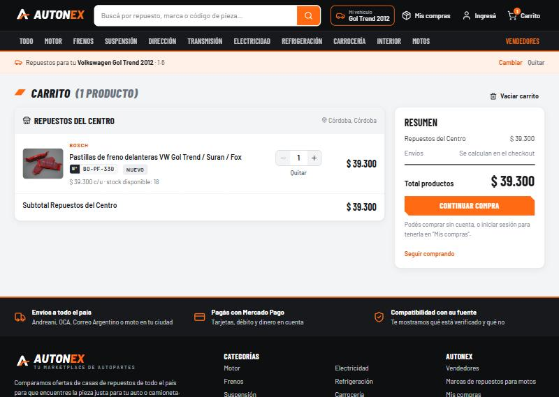
El carrito agrupa los productos por vendedor; a la derecha, el resumen.
Los productos se agrupan por vendedor: podés comprarle a varias casas en una sola compra y un solo pago.
Cambiá la cantidad con − / + (nunca supera el stock disponible), o tocá Quitar.
Vaciar carrito saca todo.
El envío se calcula en el checkout, según la forma de entrega de cada vendedor.
Tocá Continuar compra. No hace falta tener cuenta.
6Comprar paso a paso
1 · Tus datos→2 · Entrega→3 · Envío (si corresponde)→4 · Resumen→Pagar en Mercado Pago→Resultado
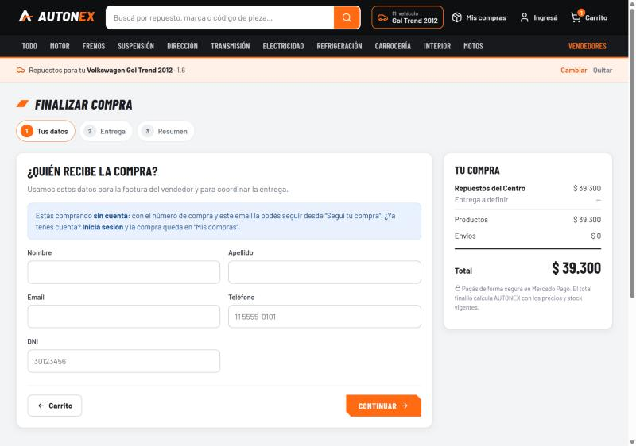
Paso 1 del checkout, comprando sin cuenta. A la derecha, el resumen de la compra.
Tus datos — "¿Quién recibe la compra?": nombre, apellido, email, teléfono y DNI (7 u 8 números, sin
puntos). Si iniciaste sesión, se completan con los datos de tu cuenta.
Entrega — "¿Cómo querés recibir cada pedido?": para cada vendedor elegí
Retiro en el local (gratis; se muestra la dirección y el horario) o Envío a domicilio.
Envío (solo si elegiste envío): la dirección de envío y el transportista
(Andreani, OCA, Correo Argentino o moto), cada uno con su precio y demora estimada.
Resumen — "Revisá tu compra": controlá productos, entregas y total, marcá la casilla "Leí y acepto los Términos y condiciones y la Política de privacidad" y tocá
Pagar $… con Mercado Pago.
Mercado Pago: elegí el medio de pago (tarjeta de crédito o débito, o tu cuenta de Mercado Pago) y pagá.
Resultado: Mercado Pago te devuelve a AUTONEX, que muestra el resultado:
Pantalla
Qué significa
Qué podés hacer
¡Pago aprobado!
La compra está pagada; cada vendedor recibió su pedido.
Abrir el Comprobante, seguir la compra o seguir comprando.
Pago pendiente
Mercado Pago todavía lo está procesando.
Esperar: cuando se acredita, la compra se confirma sola.
El pago fue rechazado
No se cobró nada; la compra quedó guardada.
Intentar pagar de nuevo con otra tarjeta.
Cuándo se descuenta el stockRecién cuando Mercado Pago aprueba el pago. Además, AUTONEX recalcula
precios, stock y envíos al crear la compra: si algo cambió mientras comprabas, te avisa y actualiza el carrito.
7Comprar sin cuenta
Se puede comprar sin registrarse. El checkout lo indica con el aviso "Estás comprando sin cuenta".
Completás los mismos datos (nombre, email, teléfono, DNI) y pagás igual que con cuenta.
Al terminar, guardá el número de compra: está en la pantalla de pago aprobado, en el comprobante y en el mail con el comprobante que te llega al email que cargaste.
Con ese número y el email que usaste, podés ver tu compra desde cualquier computadora o celular (sección 9).
Por privacidad, la compra no queda guardada en el navegador: solo se ve en la pestaña donde compraste hasta que
la cerrás. En una computadora compartida podés tocar Cerrar ahora en "Seguí tu compra".
¿Ya tenés cuenta?Iniciá sesión antes de pagar y la compra queda en "Mis compras" de tu
cuenta, sin tener que buscarla con número y email.
8Después de comprar: comprobante y seguimiento
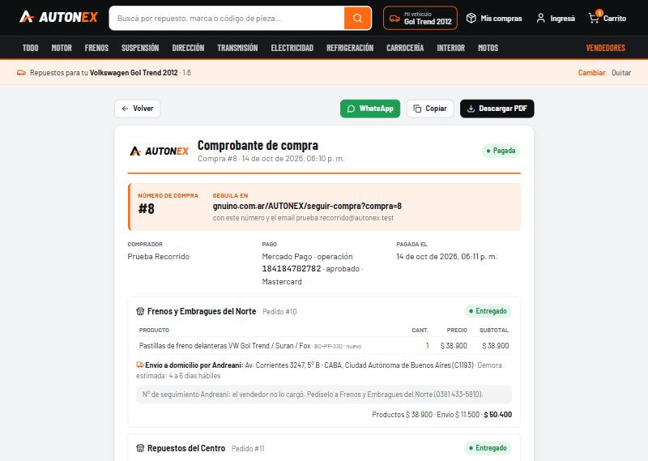
El comprobante: número de compra, dónde seguirla, pago de Mercado Pago y cada pedido con su entrega.
Cuando Mercado Pago aprueba el pago, el comprobante te llega por mail (asunto "Tu compra #N en AUTONEX"), con o sin cuenta. En el sitio, el comprobante se abre con el botón Comprobante cuando el pago se aprueba, o desde cada
compra pagada en "Mis compras" / "Seguí tu compra". Tiene:
el número de compra y el enlace para seguirla;
el comprador, el pago de Mercado Pago (número de operación, estado y medio de pago) y la fecha;
cada pedido con sus productos y su entrega. En los envíos, el número de seguimiento del transportista cuando el
vendedor lo despacha.
Botones: Descargar PDF (abre la impresión: elegí "Guardar como PDF"),
WhatsApp, Copiar y, en el celular,
Compartir. El texto que se comparte no incluye dirección, teléfono ni email.
Los estados de un pedido
Una compra tiene un pedido por cada vendedor, y cada vendedor lo va actualizando:
Pagado→En preparación→Enviado/Listo para retirar→Entregado
Cuando el vendedor lo marca como Enviado, carga el número de seguimiento del transportista (Andreani, OCA o
Correo Argentino), que aparece en la compra y en el comprobante.
9Buscar tus compras
Si compraste…
Dónde la ves
Con cuenta
Iniciá sesión → menú de tu cuenta → Mis compras. Ahí están todas tus compras.
Sin cuenta
Mis compras (arriba) → "Seguí tu compra" → escribí el número de compra y el email que usaste → Buscar compra.
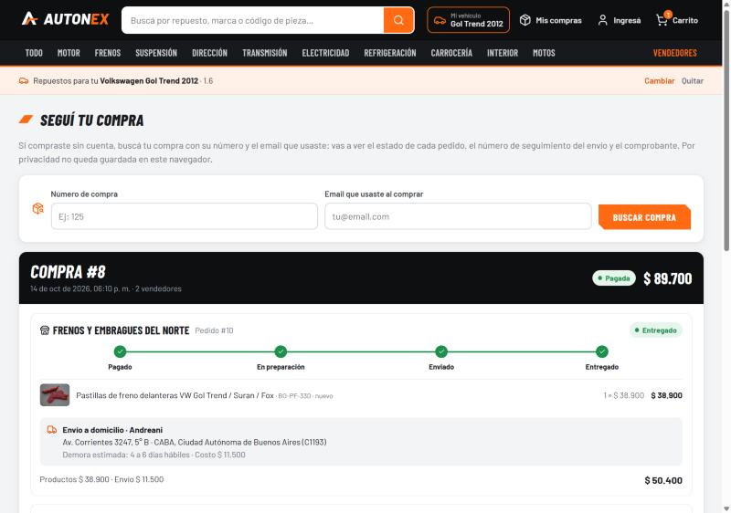
"Seguí tu compra": la compra #8 con el estado de cada pedido, la línea de tiempo y la entrega.
En cada compra ves el estado general, cada pedido con su línea de tiempo, los productos, la entrega y el pago. Si la compra
quedó sin pagar, aparecen Pagar con Mercado Pago y
Ya pagué: verificar (consulta a Mercado Pago si el pago se acreditó).
Arrepentirte de una compra (Botón de arrepentimiento)
Tenés 10 días corridos desde que recibís el producto (o desde la compra, lo último) para revocarla, sin dar
motivos y sin costo (art. 34 de la Ley 24.240).
Tocá Botón de arrepentimiento: está al pie de todas las páginas y en cada compra pagada.
Escribí el número de compra y el email que usaste. El motivo es opcional.
Tocá Quiero arrepentirme de mi compra: recibís en el momento el código de identificación
(por ejemplo ARR-12-7K3QZP). Guardalo.
Tus pedidos quedan frenados: el vendedor no los prepara ni los despacha.
Si ya recibiste el producto, el vendedor coordina con vos la devolución, que es a su cargo.
Cuando el vendedor cancela el pedido, te reintegramos el total (productos y envío) con Mercado Pago, al
mismo medio de pago. Te llega un mail y en tu compra figura "Reintegro … aprobado por Mercado Pago".
10Crear una cuenta e ingresar
Tocá Ingresá → Creala gratis, o entrá a /AUTONEX/registro. Primero
elegí el tipo de cuenta:
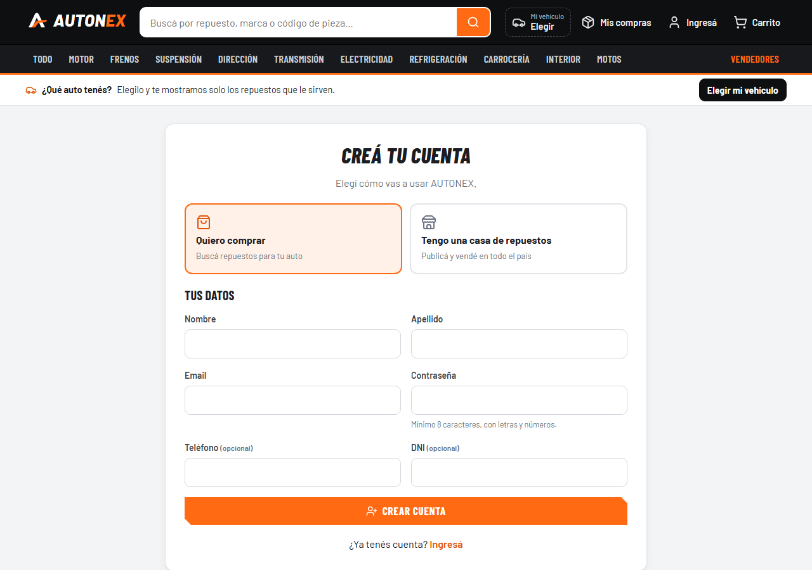
"Quiero comprar": cuenta de comprador.
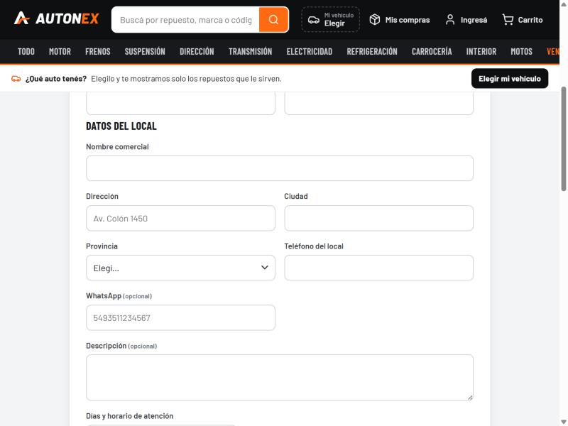
"Tengo una casa de repuestos": suma los datos del local.
Cuenta de comprador ("Quiero comprar")
Completá nombre, apellido, email y contraseña. Teléfono y DNI son opcionales.
La contraseña tiene que tener mínimo 8 caracteres, con letras y números.
Marcá "Leí y acepto los Términos y condiciones y la Política de privacidad".
Tocá Crear cuenta. Te llega el mail "Confirmá tu email en AUTONEX": tocá Confirmar mi email. Recién ahí la cuenta se activa y entrás con la sesión iniciada.
Cuenta de vendedor ("Tengo una casa de repuestos")
Completá tus datos (igual que el comprador).
En Datos del local: nombre comercial, dirección, ciudad, provincia y teléfono del local. WhatsApp (con código
de país, por ejemplo 5493511234567) y descripción son opcionales.
En Días y horario de atención marcá qué días abre el local y a qué hora abre y cierra. Para horario cortado
tocá + Horario cortado y cargá el segundo turno; con Copiar el lunes de martes a viernes
repetís el mismo horario. Abajo ves cómo lo van a leer los compradores.
Marcá la casilla para aceptar los Términos y condiciones, los Términos para vendedores
(publicaciones, plazos de los pedidos, facturación y comisión) y la Política de privacidad.
Tocá Crear cuenta y abrir mi local y confirmá el email con el link que te llega. Al confirmarlo se activa la cuenta, tu local aparece en AUTONEX y entrás a tu panel de vendedor.
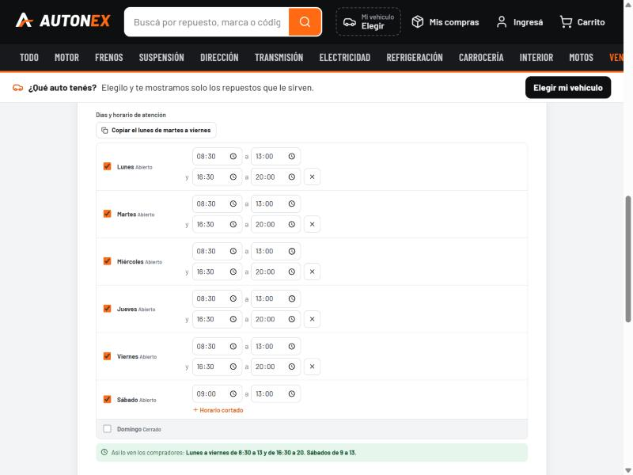
Días y horario de atención: cada día abierto o cerrado, con horario corrido o cortado, y la vista previa en verde.
Sin confirmar el email, la cuenta no está activaNo se puede ingresar y, si es de vendedor, el local no aparece en el sitio. Si el mail no llegó (revisá el correo no deseado), al intentar ingresar aparece el botón Reenviar el mail de confirmación. El link vence en 7 días.
Ingresar y salir
Ingresá → email y contraseña → Ingresar.
¿Olvidaste tu contraseña? (debajo de la contraseña): escribí tu email y te llega un link para elegir una nueva. Vence en 1 hora.
Con la sesión iniciada, tu nombre aparece arriba. Su menú tiene Mi cuenta, Mis compras, el
Panel de tu local (si sos vendedor), Administrar catálogo (si sos administrador) y Cerrar sesión.
Mi cuenta: tus datos y eliminar la cuenta
En Foto de perfil (opcional) tocás Subir foto y elegís una imagen JPG, PNG
o WebP: se recorta cuadrada y aparece arriba, en el botón de tu cuenta. Con Cambiar foto o Quitar
la reemplazás o la borrás. Sin foto se muestran tus iniciales.
En Mi cuenta cambiás tu nombre, apellido, teléfono y DNI y tocás Guardar cambios.
Eliminar mi cuenta (comprador o vendedor): tocá Quiero eliminar mi cuenta, escribí tu
contraseña y la palabra ELIMINAR y confirmá. Se borran tus datos personales, ya no podés ingresar y te llega un mail de aviso.
No se puede deshacer.
Si sos vendedor, tu local se da de baja: tus publicaciones se pausan y el local deja de aparecer.
Si tenés pedidos en curso (tuyos o de tu local), primero tienen que estar entregados. Las compras sin pagar se cancelan; las
compras ya hechas se conservan con sus datos, como exige la ley.
11Panel del vendedor
Se abre desde el menú de la cuenta → Panel de [tu local]. Arriba muestra el nombre y la ciudad del local y el botón
Ver mi página (tu página pública en AUTONEX). Tiene cuatro pestañas:
ResumenPedidosPublicacionesMi local
Resumen
Tarjetas con los pedidos pagados para preparar, los que están en preparación, los enviados o listos para retirar, las ventas del
mes, las publicaciones activas y pausadas, y las que tienen stock bajo o sin stock. Cada tarjeta lleva a su lista.
Pedidos
Filtros: Activos, Pagados, En preparación, Enviados, Listos para retirar, Entregados y Todos.
Cada pedido muestra el número de compra, la línea de tiempo, los datos del comprador (nombre, DNI, teléfono y
email), la entrega, los productos y el total.
Los pedidos se avanzan con los botones Marcar en preparación,
Marcar como enviado o Marcar listo para retirar, y
Marcar como entregado. No se pueden saltear pasos.
Número de seguimiento: en los envíos por Andreani, OCA o Correo Argentino, cargalo en el campo
"N° de seguimiento" antes de tocar Marcar como enviado. Si te olvidaste o te equivocaste, lo corregís
después con Guardar.
Los pedidos aparecen recién cuando Mercado Pago aprueba el pago del comprador.
Arrepentimientos: si el comprador usa el Botón de arrepentimiento, el pedido aparece primero, con un aviso rojo
con el código y el motivo, y queda frenado: ya no se puede marcar en preparación ni enviado. Tocá
Cancelar el pedido y reintegrar (con la casilla para volver a poner las unidades en stock). Si el
comprador ya tiene el producto, coordiná la devolución (a tu cargo) y, cuando lo recibas, marcá "Ya recibí el producto
devuelto" antes de cancelar. AUTONEX le reintegra el total del pedido con Mercado Pago; si el reintegro falla, aparece
Reintentar el reintegro. En el Resumen hay una tarjeta "Arrepentimientos para resolver" y en Pedidos el filtro
Arrepentimientos.
Mi local
Arriba está el Logo del local: Subir logo (JPG, PNG o WebP de hasta 8 MB;
si no es cuadrado se completa con blanco). Se ve en tu página, en el listado de vendedores, en las ofertas de tus productos y en
tu panel. Con Quitar volvés al logo anterior o a las iniciales del local.
Editá nombre comercial, descripción, dirección, ciudad, provincia, teléfono y WhatsApp, y en Días y horario de
atención cargá cada día (abierto o cerrado, horario corrido o cortado). Tocá Guardar cambios.
Estos datos se ven en tu página —con la semana completa y si el local está abierto ahora— y en los retiros en el
local.
12Cómo carga productos un vendedor
En Publicaciones ves solo los productos de tu local: el panel no muestra el catálogo de otras casas.
Filtros: Todas, Activas, Pausadas y Sin stock, y un buscador.
Publicar un repuesto
Tocá + Nueva y completá la ventana "Nueva publicación":
Parte
Qué cargar
El repuesto
Nombre, marca del repuesto, número de pieza del fabricante (como figura en la caja), categoría (la más específica), tipo de
pieza y EAN (opcional).
Compatibilidad
Marcalo como universal o elegí los vehículos compatibles (marca → modelo → año → versiones).
Fotos
Tocá Agregar fotos: hasta 6, en JPG, PNG o WebP de hasta 8 MB cada una (desde el celular podés
sacarlas con la cámara). La primera es la principal. Se achican y optimizan solas al subirlas.
Descripción
Opcional: estado de la pieza, qué incluye, garantía. En los usados conviene decir de qué vehículo salió, el kilometraje y las
marcas de uso.
Tu oferta
Precio, stock y condición (nuevo o usado) → + Publicar.
Misma pieza, misma fichaSi otra casa ya vende la misma pieza (misma marca y número de pieza), tu
publicación se suma a esa ficha y el comprador compara los precios de todas las casas en "Compará las ofertas". Tus fotos, tu
descripción, tu precio y tu stock siguen siendo solo tuyos: el comprador los ve con el botón "Ver las fotos y la descripción"
de tu oferta.
Sin verificarLos productos nuevos y sus compatibilidades se publican como sin verificar
hasta que el equipo de AUTONEX los revisa con el catálogo del fabricante. El comprador lo ve en la ficha.
Un mismo repuesto se puede publicar dos veces: una como nuevo y otra como usado.
Mantener el catálogo al día
En la tabla, cambiá el precio o el stock y tocá Guardar.
Fotos abre "Fotos y descripción": subí más fotos (hasta 6), borrá las que no quieras y
editá la descripción con Guardar descripción. Las publicaciones sin fotos muestran el aviso
"Sin fotos propias · agregalas".
Pausar saca la publicación del catálogo sin borrarla; Reactivar la vuelve a mostrar.
Con stock 0 la publicación sigue existiendo, pero no se puede comprar.
Debajo de cada producto ves cuántas casas más lo venden y el mejor precio de la competencia en la misma condición.
Cargar muchos productos de una vez
Desde el panel, el vendedor publica de a un producto. Para subir un catálogo completo (cientos de productos),
el administrador lo importa desde un archivo CSV, Excel, JSON o XML (sección 13).
13Panel de administración
Solo para la cuenta de administrador: menú de la cuenta → Administrar catálogo.
Buscar, crear y editar marcas, modelos, versiones, repuestos y fuentes de datos.
Compatibilidades
Revisar y verificar qué repuesto le sirve a qué vehículo.
Importar
Cargar datos en cantidad desde un archivo (ver abajo).
Importaciones
Historial de cada importación, con su resultado.
Duplicados
Registros que parecen repetidos, para revisarlos.
Importar un catálogo
Elegí qué vas a importar (por ejemplo, repuestos) y la fuente de los datos.
Si no tenés el archivo armado, tocá Descargar plantilla CSV: trae las columnas que espera AUTONEX.
Subí el archivo (CSV, Excel, JSON o XML) y elegí qué hacer si una fila se parece a un registro existente.
Tocá Validar sin guardar: muestra qué filas se crearían y cuáles tienen errores, sin guardar nada.
Si está todo bien, tocá Importar.
14Otras páginas del sitio
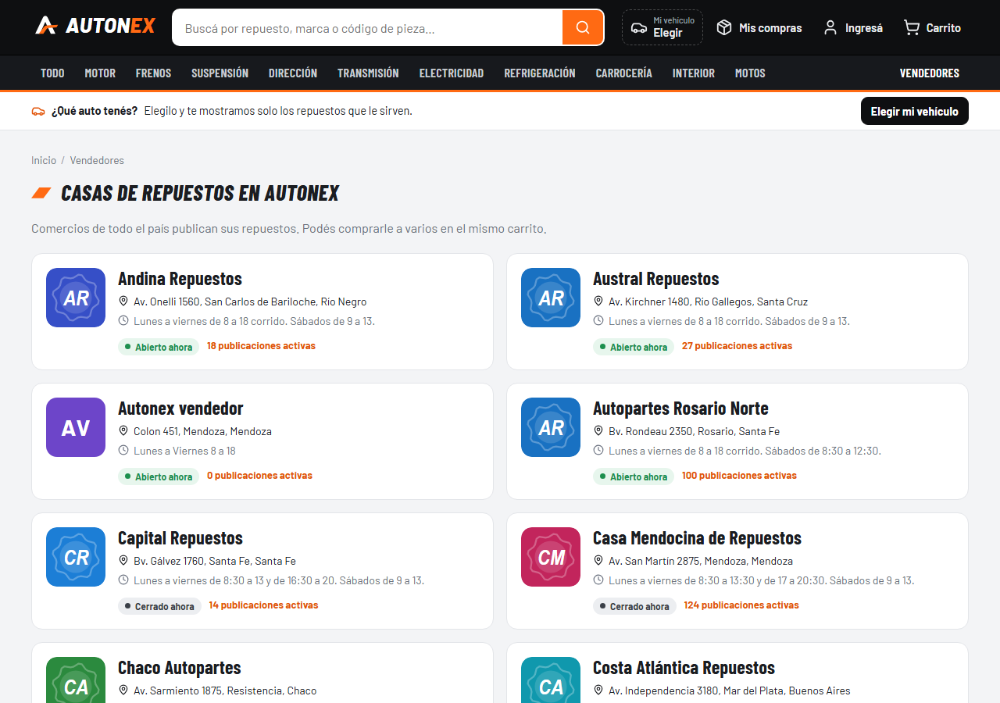
Vendedores: las casas de repuestos de todo el país, con su logo (o sus iniciales), el horario y si están abiertas ahora.
Vendedores (arriba a la derecha): todas las casas, con "Abierto ahora" o "Cerrado ahora". Cada una tiene su
página con dirección, el horario de cada día, contacto y sus productos.
Marcas de repuestos para motos (al pie): las marcas y qué fabrica cada una.
Créditos (al pie): autor y licencia de cada foto y logo.
Información legal (al pie): Términos y condiciones (para todos los usuarios),
Términos para vendedores, Política de privacidad, el Botón de arrepentimiento y el
enlace a Defensa de las y los Consumidores para hacer un reclamo.
15Preguntas frecuentes
¿Cómo elimino mi cuenta?
Desde Mi cuenta → Eliminar mi cuenta, con tu contraseña y la palabra ELIMINAR. Si tenés pedidos en curso, primero tienen que estar entregados.
Me registré y no puedo ingresar.
La cuenta se activa al tocar el link del mail "Confirmá tu email en AUTONEX". Si no te llegó, intentá ingresar y tocá "Reenviar el mail de confirmación".
¿Necesito una cuenta para comprar?
No. Podés comprar sin cuenta y seguir la compra con el número y el email.
Compré sin cuenta y no veo la compra en otra computadora.
Es a propósito: por privacidad no queda guardada en el navegador. Buscala en Mis compras con el número de compra y el email.
¿Puedo comprarle a varias casas a la vez?
Sí. El carrito agrupa por vendedor, pagás una sola vez y cada casa recibe su pedido. Para cada una elegís retiro o envío.
¿Qué significa "sin verificar"?
Que el repuesto figura como compatible con tu vehículo, pero ese dato todavía no se confirmó con el catálogo del fabricante.
Chequeá el número de pieza o consultá al vendedor.
Me rechazaron el pago, ¿perdí la compra?
No. La compra queda guardada: tocá "Intentar pagar de nuevo" o pagala después desde Mis compras.
Me arrepentí de una compra, ¿qué hago?
Dentro de los 10 días corridos desde que lo recibiste, usá el Botón de arrepentimiento (al pie): el pedido se frena y, al
cancelarlo el vendedor, te reintegramos el total con Mercado Pago.
¿Qué garantía tienen los repuestos?
La garantía legal: 6 meses para productos nuevos y 3 meses para usados, desde la entrega. Se reclama al vendedor del pedido.
¿Dónde está el número de seguimiento del envío?
En la compra y en el comprobante, cuando el vendedor marca el pedido como enviado.
Soy vendedor, ¿cuándo veo un pedido nuevo?
Cuando Mercado Pago aprueba el pago. Aparece en Pedidos como "Pagado".
16Para probar la demo
Los pagos de la demo se hacen con tarjetas de prueba de Mercado Pago. Por ejemplo:
Tarjeta
Vencimiento
CVV
Titular
DNI
5031 7557 3453 0604
11/30
123
APRO
12345678
En Mercado Pago elegí Tarjeta y pagá sin iniciar sesión; con el titular APRO el pago se
aprueba. Las cuentas de prueba están en el documento aparte Usuarios de prueba.
AUTONEX · Manual de uso · 21/10/2026 · Capturas del sitio publicado. Vendedores, precios y repuestos de demostración.